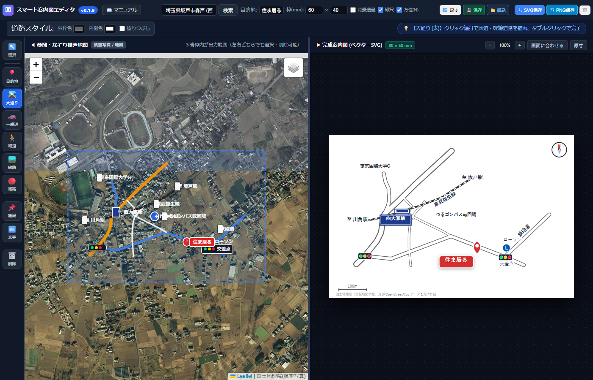
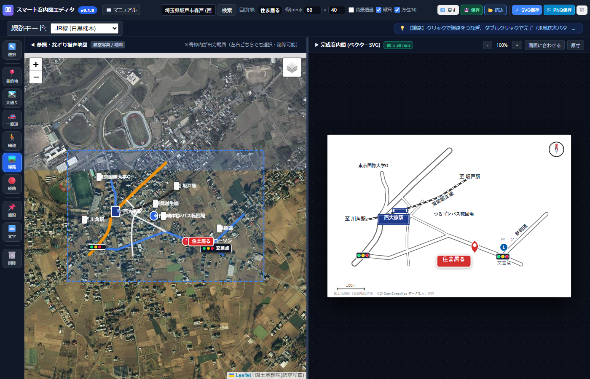
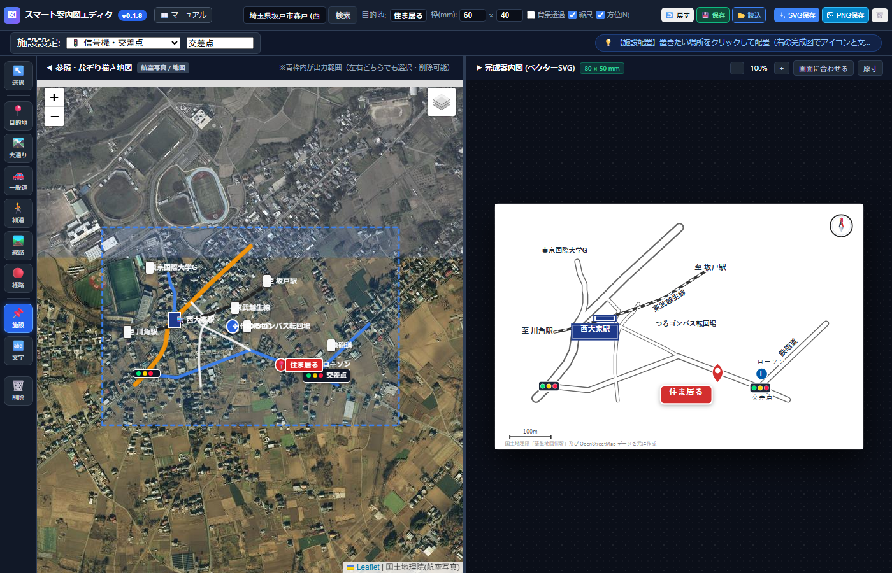
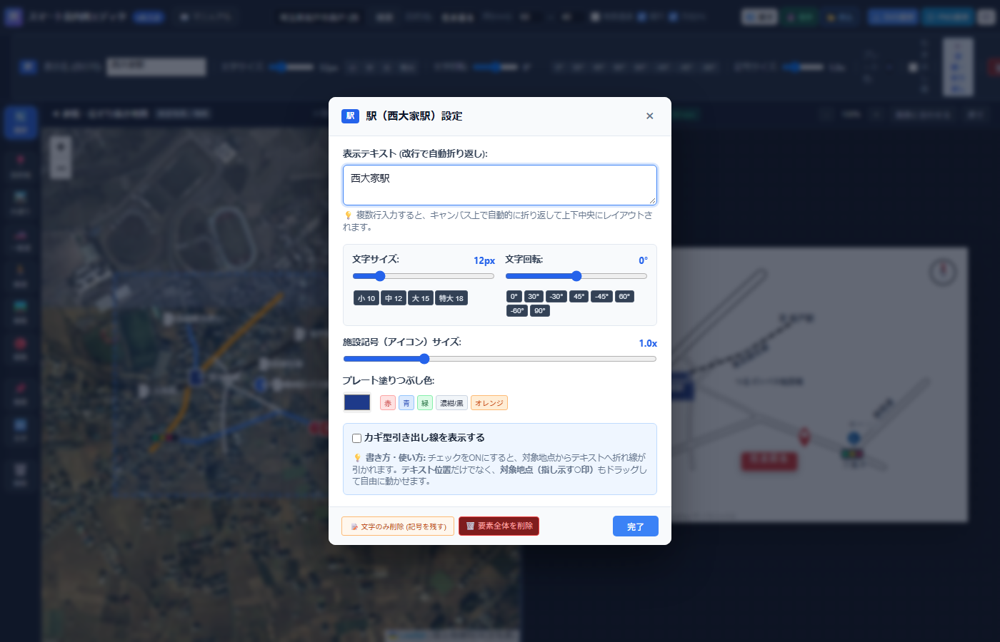

Illustratorで1〜2時間かかっていたパス引きや交差点合体の重労働はもう不要です。
左側のツールバーを上から順番に使っていくだけで、誰でも思い通りの美しい案内図を作成できます。
道路や線路の真ん中（流心）をポチポチとクリックするだけ。実地図の緯度経度を拾って自動製図されます。
ベクトルデータだから拡大縮小しても輪郭劣化ゼロ。チラシの縦長枠・横長枠・Webバナーに自由自在に使い回せます。
JR白黒枕木・私鉄2重線・信号機スタンプ・カギ型引き出し線など、チラシに必要なプロの表現を完全網羅。
以下は、本ツールを使って実際に作成された不動産案内図（西大家駅〜住ま居る現地 周辺）です。
左側の国土地理院・航空写真上で道路や線路をなぞっただけで、右側の高品位ベクター案内図が立ち上がっています。
ヘッダーの 「📑 確認申請 (1/2500)」 をクリックすると、建築確認申請や開発許可申請の添付図面（建築基準法施行規則第1条の3等の「付近見取図・案内図 縮尺1/2500程度」）を即座に作成できる専用モードに切り替わります。
| 機能・項目 | 説明・メリット |
|---|---|
| 1/2,500 厳密縮尺管理 | A4用紙（横297×縦210mm等）において、1mm = 2.5m の正確な法定縮尺を自動計算。50m / 100m / 200m の測定スケールバーを自動配置。 |
| 国土地理院 白図/淡色図 | 申請図面の実務で最も使われる「淡色地図（建物輪郭・等高線あり）」または「白地図（シンプル白黒）」を背景に自動合成。 |
| 地名地番・住居表示 表題欄 | 図面右下に「付近見取図」「申請地 地名地番」「住居表示」「縮尺 1/2,500」「作成日」を美麗なプロ仕様枠（表題ブロック）で自動描画。 |
| 申請地シンボル（◎） | 申請地ピンを「赤二重丸（◎）」と「申請地」バッジで強調。審査機関の担当者が一目で現地を把握できます。 |
| 既存ツールとの自由な併用 | 白図の上に、既存の「施設スタンプ（駅・コンビニ・信号機・公共施設）」「道路名・至〇〇駅テキスト」「進入経路（赤点線）」をそのまま重ねて配置可能。 |
画面左側に並んでいるツールバーは、案内図を作る自然な作業手順（目的地 → 道路 → 線路 → 施設 → 文字）に沿って上から配置されています。上から順に進めれば絶対に迷いません。
Delete キー（または Backspace）を押すと削除できます。


Delete キーを押すか、プロパティモーダル内の「📝 文字のみ削除」を押すだけで、交差点名のないリアルな信号機イラスト単体になります！
-30°、-45°、30° などに傾けられます（例: 東武越生線=-30°、鉄砲道=-45°）。Ctrl + Z で元通りに復元できます。
駅名や施設、文字、目的地プレートをダブルクリックすると、大きな編集モーダルが表示されます。

| 機能 | できること・設定内容 |
|---|---|
| 改行で自動折り返し | テキスト入力でEnterを押すと、案内図上で自動的に上下中央揃えに折り返され、背景プレート枠の高さも自動追従します。 |
| 文字サイズ | スライダーまたは [小 10] [中 12] [大 15] [特大 18] ボタンで瞬時に変更。 |
| 文字回転 | ワンタップボタン [0°] [30°] [-30°] [45°] [-45°] [60°] [-60°] [90°] で傾きをぴったり揃えられます。 |
| 記号サイズ倍率 | スライダーで 0.5倍〜2.5倍 まで自由に拡大・縮小。 |
| プレート塗りつぶし色 | 赤・青・緑・濃紺/黒・オレンジなどのプリセットからワンタップで変更。 |
| カギ型引き出し線 | チェックをONにするとクランク型折れ線が表示。テキストと指し示す対象地点の両方をドラッグ可能。 |
| 文字のみ削除 | 信号機や施設で、テキストだけを消して記号スタンプのみ残すことができます。 |
建築確認申請や開発許可申請などに添付する「付近見取図（1/2500）」を、国土地理院の最新地図からワンクリックで製図できます。
ヘッダーの「📑 各種申請」タブを押すだけで切り替わります（案内図データとは完全に分離されているため安心です）。
| 機能 | 内容・特徴 |
|---|---|
| 用紙サイズと10mm余白 | A4横・A4縦・B5横・B5縦に対応。法令基準を満たすよう、前後左右に厳密な10mmの図面余白枠線を自動生成します。 |
| 1/2500 厳密縮尺 & 方位 | 国土地理院タイルを内寸枠基準で1/2500スケールに自動整合。スケールバー（50m, 100m, 200m）と方位記号を配置します。 |
| 表題欄（建築士情報対応） | 図面名称、地名地番、住居表示に加え、建築士番号・氏名の記載欄を完備。右下・右上・左下・左上への配置切り替えが可能です。 |
| 📐 区画割ツール（敷地特定） | 入り組んだ街中で「角から何件目」を明示するための敷地ポリゴン作成機能。地図上をクリックして区画を作成し、ダブルクリックで「この区画を申請地に指定する」をONにするだけで、申請地（赤枠・赤着色）と一般区画（薄グレー枠）を直感的に色分けできます。 |
| 申請地記号 & 文字の独立移動 | 申請地を示す二重丸記号（◎）と名称テキストプレートを、それぞれ独立して自由にドラッグ移動・配置できます。 |